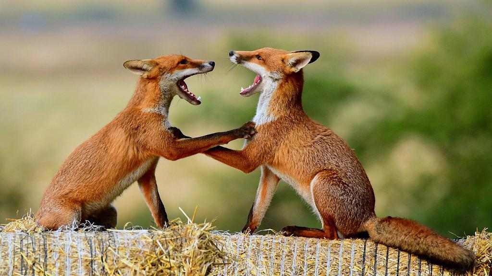

Decides mantenerte firme. Vos también tenés derecho a estar aquí. Sobreviviste al cautiverio, al cáncer, a la debilidad. No vas a dejarte intimidar ahora.
Te mantienes de pie, con la cola levantada, mostrando que no tenés intención de retirarte. El zorro rojizo inclina su cabeza, sorprendido. No esperaba que un zorro tan pequeño y claramente débil se atreviera a desafiarlo.
Se acerca más, gruñendo bajo. Está evaluándote, decidiendo si vale la pena pelear contigo. Tu corazón late fuerte pero no te movés.
Entonces hace algo inesperado: se sienta. No se va, pero tampoco ataca. Te está dando una opción silenciosa: podés compartir el territorio si probás que podés sobrevivir por tu cuenta.
Intentar cazar inmediatamente para demostrar tu valía - estás débil pero determinado
Aceptar el desafío implícito pero buscar tu propio espacio primero